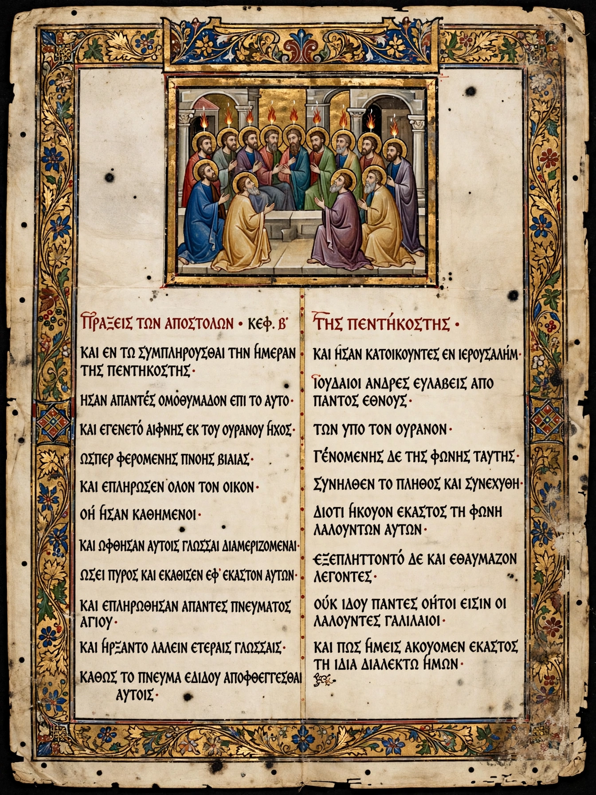

| Author | Traditionally Luke the Evangelist |
|---|---|
| Date | c. 80–90 AD (estimates vary) |
| Language | Koine Greek |
| Genre | History / narrative |
| Preceded by | Gospel of John (canonical order) |
The Acts of the Apostles (Koine Greek: Πράξεις Ἀποστόλων, Práxeis Apostólōn), often referred to simply as Acts or the Book of Acts, is the fifth book of the New Testament. It tells of the founding of the Christian Church and the spread of its message to the Roman Empire.
Acts and the Gospel of Luke form a two-part work, Luke–Acts, by the same author. The traditional view holds the author to be Luke, a companion of Paul; most critical scholars agree the two books share an author but debate his identity and the date of composition, commonly placed around 80–90 AD.
The narrative begins with Jesus's ascension and the coming of the Holy Spirit at Pentecost in Jerusalem, where Peter's preaching converts thousands. The early chapters describe the Jerusalem community, the martyrdom of Stephen, and the conversion of Saul (Paul) on the road to Damascus. The middle chapters recount the mission to the Gentiles: Peter's vision and the baptism of Cornelius, the founding of the church at Antioch, and the Council of Jerusalem (c. 49 AD), which decided that Gentile converts need not be circumcised.
The second half follows Paul's missionary journeys through Cyprus, Asia Minor, Greece and Macedonia, his arrest in Jerusalem, imprisonment at Caesarea, and his voyage — including a shipwreck on Malta — to Rome, where the book ends with Paul preaching under house arrest.
Scholars debate how far Acts is reliable history. It contains accurate local details — titles of officials such as the Asiarchs of Ephesus and the politarchs of Thessalonica — but its account of Paul differs in places from Paul's own letters, for example on the number of his visits to Jerusalem. Many scholars regard Acts as a theological history written a generation after the events.
Acts survives in two principal forms: the Alexandrian text and the longer "Western" text, about 8–10% longer, found in Codex Bezae. The differences are expansions and clarifications whose origin is debated.
See also: Early Christianity · Saint Peter · Gospel of Luke · Pentecost